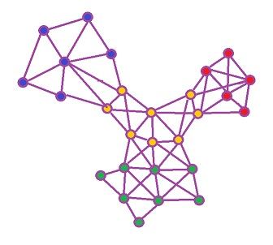

Yelp Dataset Challenge
- Thousands of reviews, businesses, users, checkins
- How well can you guess a reviews rating from its text alone?
- Can you figure out which business a user is likely to review next?
- Opportunity to win $5,000
- yelp.com/dataset_challenge/
Integration Testing The Web
An Introduction to Selenium
About me: Ken Struys
- 2009 UofT CS Grad
- Web Dev Tech Lead
- Frontend for yelp.com
- Web Infrastructure
Let's Talk Test Theory
Application Graph
Unit Testing
- Smallest testable parts of an application are individually and independently scrutinized for proper operation
- Only test those characteristics that are vital to the unit under test
Units of an Application
Python Example
def render_homepage(user_id):
user_info = get_user(user_id):
homepage_html = """
<html>
<body>
<h1>{0}</h1>
</body>
</html>
""".format(user_info['name'])
return homepage_html
def unit_test_render_homepage():
user_info = make_user(name="Bob")
homepage_html = render_homepage(user_info['id'])
assert user_info['name'] in homepage_html
assert is_valid_html(homepage_html)
No assertions about the string "Bob"
def unit_test_render_homepage():
user_info = make_user(name="Bob")
homepage_html = render_homepage(user_info['id'])
assert user_info['name'] in homepage_html
assert is_valid_html(homepage_html)
- That would be testing a different unit
- That unit should already be covered by get_user/make_user tests
Test the unit under test
def render_homepage(user_id):
user_info = get_user(user_id):
homepage_html = """
<html>
<body>
<h1>{0}</h1>
</body>
</html>
""".format(user_info['name'])
return homepage_html
- Test we connected the result of get_user with html and returned it
Makes A lot of Assumptions
- Everything else is well tested
- We're using existing interfaces correctly
Integration Testing
- Units of an application are combined and tested as a group
- Failed integration tests often reveal missing unit tests
Path of Integration
Levels of Web Integration
- Client Browser
- Client OS
- Network
- Webserver
- Application
- Database
- Server OS
def integration_test_render_homepage():
connection = HTTPConnection()
connection.do_signup_flow(name="Bob")
assert connection.user_logged_in()
assert connection.current_page == 'homepage'
assert "Bob" in connection.get_html()
Integration Testing
- More high level
- Use your best judgement when writing code
- Industry testing isn't science (CSC410 is science)
- What are the corner cases that might break?
JavaScript Testing
- Just another programming language, nothing special
- JavaScript can be tested
var setUserName = function(userName) {
$('title').text(userName);
};
var testSetUserName = function() {
var name = "Bob";
setUserName(name);
assertEqual($('title').text, name);
};
How about this?
def render_homepage(user_id):
user_info = get_user(user_id):
return """
<html>
<h1></h1>
<script>
var setUserName = function(name) {
$('h1').text(name);
}
setUserName("{0}");
</script>
</html>
""".format(user_info['name'])
Python & JavaScript Integration
Test all user environments
- We want to test every feature
- We want to test every browser
- We probably want to test every OS
Quality Assurance Teams
QA Teams
- "execute" Test Plans
- Execute the following in IE6, 7, 8, Chrome, Firefox, Safari:
- Signup for the site
- Homepage should be loaded after signup
- Your name should appear in the title
Manual QA Doesn't Scale
- Combinatorial explosion of test plans to perform
- QA teams gets huge
- Developers wait on the QA team
- Release cycles often in the 3, 6, 12 month range
- Agile software development doesn't mesh well with QA
Yelp Doesn't Have a QA Team
- > 150 Developers creating new features everyday
- ~ 3 Releases a day
- We've automated the entire QA process with Selenium
- Trust Developers to be responsible
What's Selenium?
Selenium
- Portable software testing framework for web applications
- Mimics user behavior similar to a QA team
- Libraries in Java, Ruby, Python, C#, etc.
- Write tests that operate on any browser/OS
Architecture
- Test Runner
- Selenium Server
-
Browsers


- App Server
- Database
WebDriver + WebElement
WebDriver
Controls a browser
@with_driver(DesiredCapabilities.FIREFOX)
def do_selenium_stuff(self, driver):
driver.get("http://yelp.com")
driver.maximize_window()
driver.refresh()
driver.get_screenshot_as_png()
element = driver.find_element_by_css_selector('.foo .bar')
WebElement
Controls an element on a page
element = driver.find_element_by_css_selector('.foo .bar')
element.click()
element.send_keys('foo bar')
sub_element = element.find_element_by_id('#subelement')
Let's Selenium Test This
def render_homepage(user_id):
user_info = get_user(user_id):
return """
<html>
<h1></h1>
<script>
var setUserName = function(name) {
$('h1').text(name);
}
setUserName("{0}");
</script>
</html>
""".format(user_info['name'])
Selenium Can do a lot more
- GETS and POSTS
- Navigation from page to page
- Manage multiple windows
Let's Try More Complex Examples
- Test a Signup Flow
- Test that I actually graduated from CS
Resources
- Python Library is reasonable (Java/Ruby is better)
- We're working on open sourcing some great improvements
- Follow github.com/Yelp
- Demos will get you started github.com/struys/selenium-examples
- Contact me if you get stuck @kenstruys
I want to work with passionate people
We're hiring